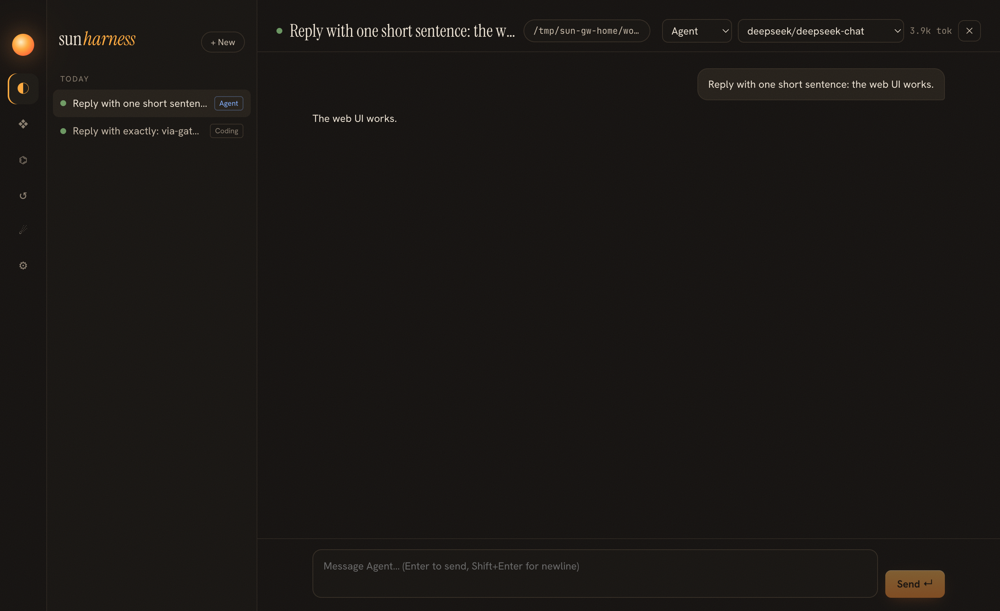

Iteration 5 · spec specs/012-gateway.md · ADR 0005-gateway-owner
10 · The gateway
Up to now, whichever window was open owned the sessions. Close the desktop and your reminders stopped; run the CLI next to it and two processes could drive one session. Hermes Agent 0.23 named the fix: one process owns every session, and every surface is a client.
Before and after
own host] --> L1[(sessions)] C1[CLI
own host] --> L1 end subgraph After D2[Desktop] -->|IPC → HTTP| G C2[CLI · RemoteHost] -->|HTTP + SSE| G W2[Browser · web-bridge] -->|HTTP + SSE| G G[sun serve
HarnessHost · jobs · schedules · auto-resume] --> L2[(sessions)] LD[launchd KeepAlive] -.-> G end
One method table, three transports
The desktop already had a list of methods the renderer may call over IPC. Moving it into core as hostMethods(host) made it the single contract: Electron IPC, POST /api/call, and GatewayClient.call() all speak it. When the gateway is up, the desktop's IPC handlers become one-line proxies to HTTP; the renderer doesn't know the difference.

Design questions
How does a client know a gateway exists, and that it is the right one?
The gateway writes ~/.sun/gateway.json with its URL, token and pid. findGateway() reads the file, calls /api/health with the token, and requires the returned home to equal its own SUN_HOME. A crashed gateway leaves a stale file, which the health check ignores. During testing the gateway was in fact killed together with the shell that started it, and clients correctly fell back to in-process mode.
Who answers approvals now?
Iteration 1 made approvals fail closed when no approver is registered. Over HTTP, an approver is an open event stream with ?approver=1. The desktop window and interactive terminals open one; a piped sun run does not. So the policy is unchanged: no human connected means deny with a reason. Verified live: the desktop attached to the gateway, showed the gateway's approval card, and the approved command ran.
How does the browser authenticate an EventSource, which cannot set headers?
The token is accepted as a query parameter on API paths. The web UI gets it once from the URL fragment (#token=…; fragments are never sent to servers or written to access logs), stores it in localStorage, and removes it from the address bar.
Why did sun run --approval need a change?
It used to set host.config.approval in-process. Through a gateway that would change the policy for every session. The mode is now part of createSession, stored in session/meta, and inherited by subagents.
Did schedules really run with nothing open?
Yes. A one-shot reminder was written to the gateway's home 30 seconds ahead; with no desktop and no CLI attached, the gateway's background tick created a [scheduled] gateway reminder session that answered on its own.
Separate who owns state from who shows it. Once one process owns the log, adding a surface is a transport problem, not a consistency problem.